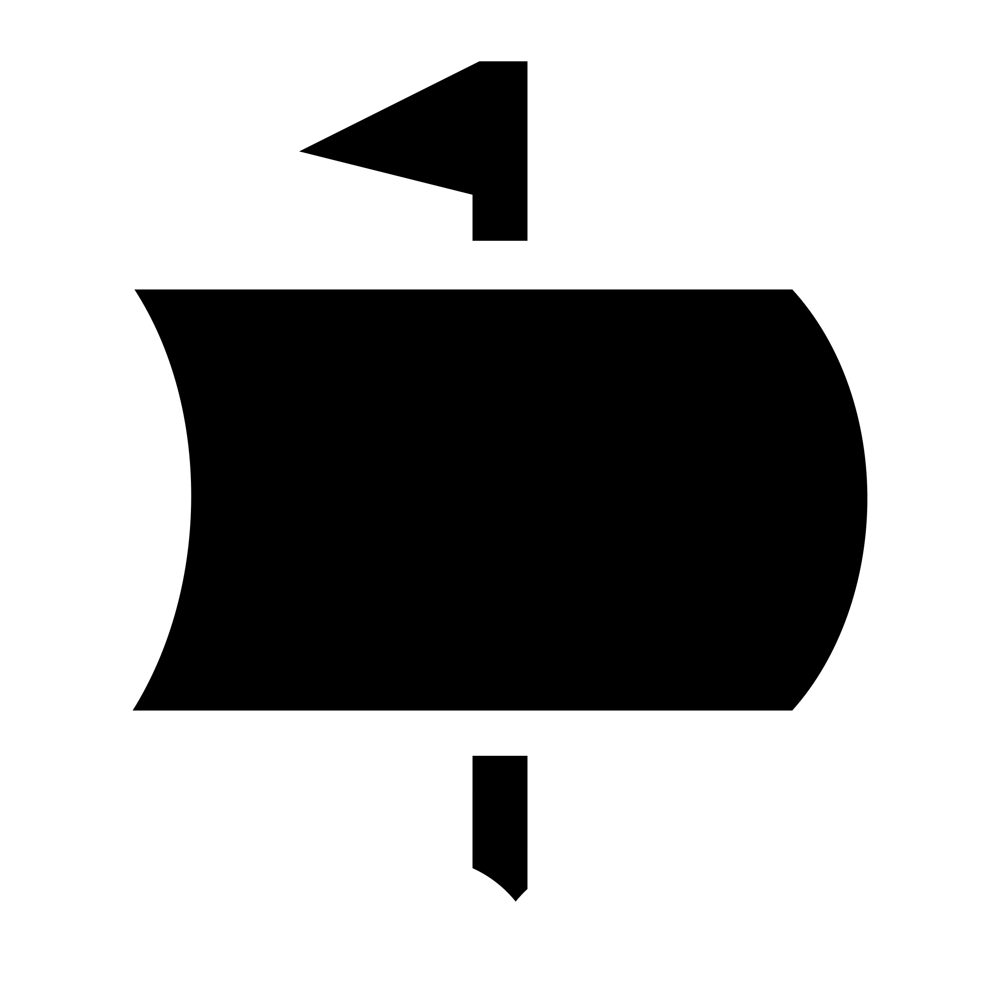

Hakkımızda
Blog
Viki
Seçim
Katıl
PARCEL BUGFIX
Türkçe
Türkçe
English
#
Korsanlıkİyidir
Korsan Parti, özgürlüklerin radikal partisidir.
Hakkımızda
Manifesto
Katıl!
Hakkımızda
Biz Korsanlar; yazılım, donanım, tasarım, internet ve ifade özgürlüğünü radikal bileşenlerle savunan özgürlük savaşçılarıyız. Radikal özgürlüğü amasız, fakatsız savunuyoruz.
Tarihimiz
Manifesto
Şimdi Katıl!
Manifesto
Halkın mevcut online nezaret düzeninde hapsoluşu, radikal ve özgürlükçü fikirlerin gündeme gelmesini sağlamıştır. Gün geçtikçe güç kazanan şirket ve devlet tekelleri, halkın özgürlüğünü hiçe sayan baskıcı rejimlere hizmet etmektedir...
Manifesto
Tüzük
Tarihimiz
Tarihimiz
Korsan Parti Türkiye (kısaca KPT), ilk olarak 26 Ağustos 2009’da Serdar Kuzuoğlu ve İsmail Hakkı Polat tarafından kurulan, Türkiye'de faaliyet gösteren siyasi bir örgüttür.
None
Vikipedi
None
Şimdi Katıl!
Özgürlüğün partisinde örgütlenin.